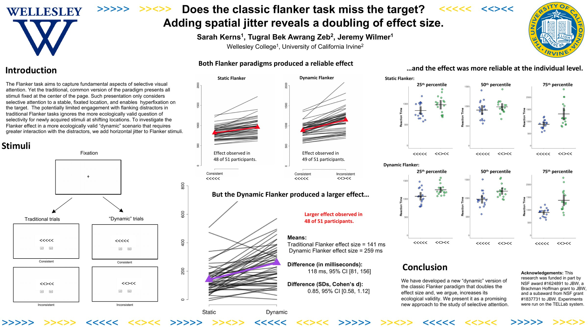

Kerns, S., Awrang Zeb, T. B., & Wilmer, J. (2022). Does the classic flanker task miss the target? Adding spatial jitter reveals a doubling of effect size. Poster, VSS 2022. Journal of Vision, 22(14), 4453. https://doi.org/10.1167/jov.22.14.4453
